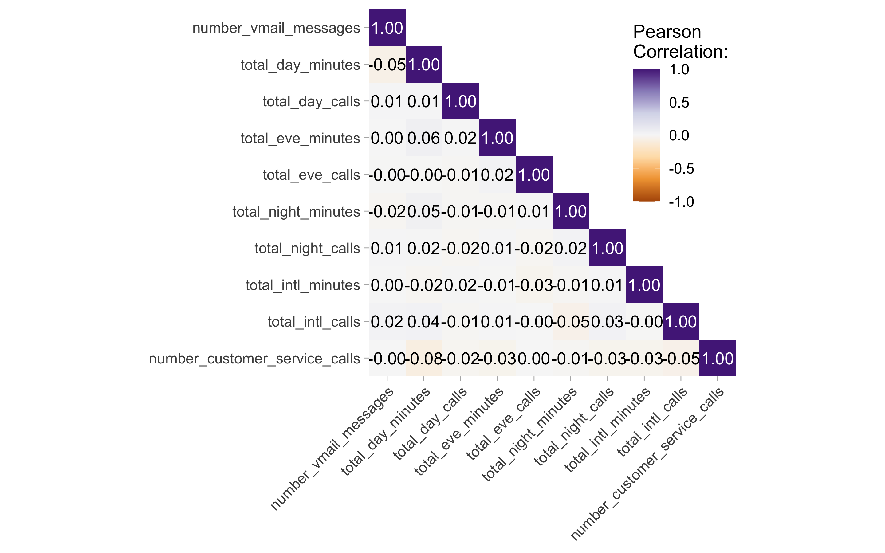
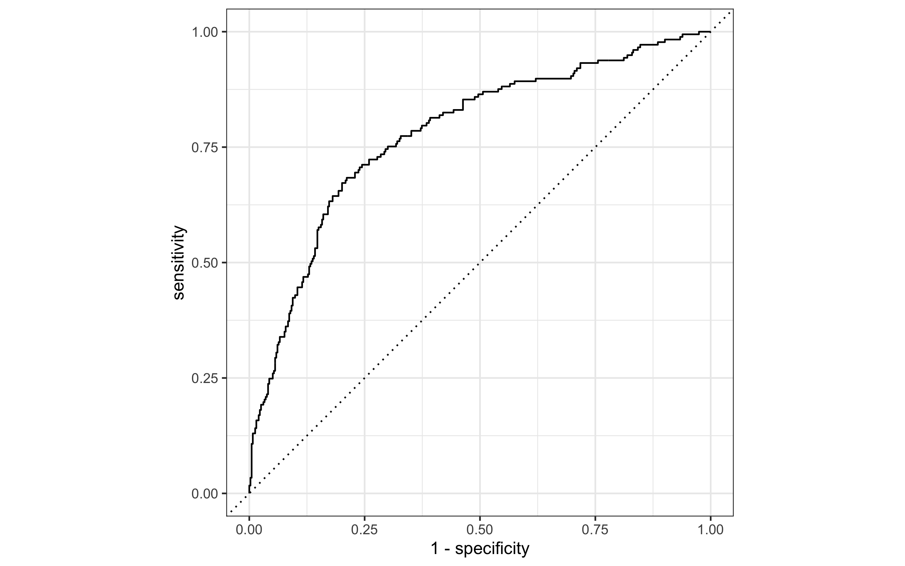

Predicting Consumer Mobile Plan Cancellation
Data Overview
The data in question is concerned with consumer behaviour around their mobile plan, we are particularly interested in being able to predict mobile plan cancellation. Lets get a quick overview of the data:
Show the code
glimpse(mobile_carrier_data) Rows: 2,277
Columns: 14
$ canceled_plan <fct> yes, no, yes, no, no, yes, no, yes, no, …
$ us_state_region <fct> East North Central, South Atlantic, New …
$ international_plan <fct> no, no, no, no, no, no, no, yes, yes, no…
$ voice_mail_plan <fct> no, yes, no, no, yes, no, yes, no, yes, …
$ number_vmail_messages <int> 0, 11, 0, 0, 33, 0, 28, 0, 30, 0, 0, 0, …
$ total_day_minutes <dbl> 202.3, 252.9, 113.0, 138.7, 228.2, 165.4…
$ total_day_calls <int> 105, 129, 108, 107, 85, 106, 117, 106, 1…
$ total_eve_minutes <dbl> 195.4, 284.3, 169.2, 256.9, 249.2, 273.7…
$ total_eve_calls <int> 131, 88, 107, 113, 114, 109, 102, 99, 10…
$ total_night_minutes <dbl> 190.1, 262.8, 156.6, 234.9, 93.5, 210.0,…
$ total_night_calls <int> 88, 99, 61, 74, 89, 93, 80, 89, 105, 123…
$ total_intl_minutes <dbl> 9.0, 12.3, 9.2, 10.0, 10.2, 8.7, 8.7, 8.…
$ total_intl_calls <int> 2, 1, 5, 3, 7, 3, 3, 3, 3, 4, 3, 4, 3, 9…
$ number_customer_service_calls <int> 3, 1, 2, 0, 0, 0, 0, 6, 2, 2, 2, 4, 0, 1…Show the code
# skimr::skim(mobile_carrier_data)Exploratory Data Analysis
It would be interesting to see how the total day calls variable is distributed and whether this differs by region:
Show the code
library(ggridges)
mobile_carrier_data |>
ggplot(aes(total_day_calls, us_state_region,
fill=us_state_region))+
geom_density_ridges()+
labs(y="",
x="Calls/day",
title = "Distribution of total calls/day by US state region",
)+
scale_fill_brewer(palette = "Spectral")+
theme_ridges()+
guides(fill=FALSE)Multicollinearity can be explored by creating a correlation matrix between the numeric variables:
Show the code
corm <-
mobile_carrier_data |>
select_if(is.numeric) |>
corrr::correlate(diagonal = 1) |>
corrr::shave(upper = FALSE)
corm |>
pivot_longer(
cols = -term,
names_to = "colname",
values_to = "corr"
) |>
mutate(
rowname = fct_inorder(term),
colname = fct_inorder(colname),
label = ifelse(is.na(corr), "", sprintf("%1.2f", corr))
) ->corm
# Create the plot:
corm |>
ggplot(aes(rowname, fct_rev(colname),
fill=corr))+
geom_tile() +
geom_text(aes(
label = label,
color = abs(corr) < .75
)) +
coord_fixed(expand = FALSE) +
scale_color_manual(
values = c("white", "black"),
guide = "none"
) +
scale_fill_distiller(
palette = "PuOr", na.value = "white",
direction = 1, limits = c(-1, 1),
name = "Pearson\nCorrelation:"
) +
labs(x = NULL, y = NULL) +
theme(panel.border = element_rect(color = NA, fill = NA),
legend.position = c(.85, .8),
axis.text.x = element_text(angle = 45,
vjust=1,
hjust=1))
Doesn’t seem like there are any potential multicolinearity issues with the numeric variables, in fact the variables with the highest correlation are total_day_minutes and customer_service_calls with a very low -0.08 correlation.
Model Building
This data contains information on whether a member cancelled their service. Lets quickly take a look at the proportion of the cancellations:
Show the code
mobile_carrier_data |>
select(canceled_plan) |>
group_by(canceled_plan) |>
tally() |>
mutate(perc=round((n/sum(n)*100),2))# A tibble: 2 × 3
canceled_plan n perc
<fct> <int> <dbl>
1 yes 707 31.0
2 no 1570 69.0A total of 31.03% members in our dataset have canceled their plan, inversely 68.95% did not cancel. The goal will be to predict canceled_plan with several machine learning algorithms: logistic regression, LDA, KNN, and random forest.
Logistic regression
First step prior to any modeling will be to create the training and testing splits:
Show the code
set.seed(123)
canceled_split <- initial_split(mobile_carrier_data,
prop = 0.75,
strata = canceled_plan)
canceled_training <- canceled_split |>
training()
canceled_testing <- canceled_split |>
testing()
# Crossvalidation folds for tuning:
set.seed(123)
canceled_folds <- vfold_cv(canceled_training)Feature engineering:
The following transformations to the data are undertaken. First the skewness from the numeric predictors is removed with step_YeoJohnson()
Show the code
canceled_recipe <-
recipe(canceled_plan~., data=mobile_carrier_data) |>
step_YeoJohnson(all_numeric(), -all_outcomes()) |>
step_normalize(all_numeric(), -all_outcomes()) |>
step_dummy(all_nominal(), -all_outcomes())The transformation of the data can be checked, by prepping and baking the data:
Show the code
canceled_recipe |>
prep() |>
bake(new_data=NULL)# A tibble: 2,277 × 21
number_vmail_messages total_day_minutes total_day_calls total_eve_minutes
<dbl> <dbl> <dbl> <dbl>
1 -0.573 0.306 0.223 -0.135
2 1.65 1.15 1.44 1.62
3 -0.573 -1.23 0.373 -0.658
4 -0.573 -0.782 0.323 1.08
5 1.76 0.742 -0.760 0.929
6 -0.573 -0.322 0.273 1.41
7 1.75 0.626 0.827 -0.924
8 -0.573 2.32 0.273 -1.26
9 1.75 -0.516 0.675 -1.68
10 -0.573 -0.0351 0.0238 0.201
# … with 2,267 more rows, and 17 more variables: total_eve_calls <dbl>,
# total_night_minutes <dbl>, total_night_calls <dbl>,
# total_intl_minutes <dbl>, total_intl_calls <dbl>,
# number_customer_service_calls <dbl>, canceled_plan <fct>,
# us_state_region_East.South.Central <dbl>,
# us_state_region_Mid.Atlantic <dbl>, us_state_region_Mountain <dbl>,
# us_state_region_New.England <dbl>, us_state_region_Pacific <dbl>, …It seems the data has been transformed as desired.
Specifying the Logistic Regression Model
The logistic regression model is specified below:
Show the code
logistic_model <- logistic_reg() |>
set_engine("glm") |>
set_mode("classification")Creating the workflow
Next we put our recipe and model specification together to create a workflow:
Show the code
logistic_wf <- workflow() |>
add_model(logistic_model) |>
add_recipe(canceled_recipe) The workflow can be inspected by calling it:
Show the code
logistic_wf══ Workflow ════════════════════════════════════════════════════════════════════
Preprocessor: Recipe
Model: logistic_reg()
── Preprocessor ────────────────────────────────────────────────────────────────
3 Recipe Steps
• step_YeoJohnson()
• step_normalize()
• step_dummy()
── Model ───────────────────────────────────────────────────────────────────────
Logistic Regression Model Specification (classification)
Computational engine: glm Lets fit the model to the cross validation folds:
Show the code
logistic_cv_results <- fit_resamples(
logistic_wf,
canceled_folds,
metrics = metric_set(
recall, precision, f_meas,
accuracy, kap,
roc_auc, sens, spec),
control = control_resamples(save_pred = TRUE)
)
# Collect the specified metrics:
logistic_cv_results |>
collect_metrics()# A tibble: 8 × 6
.metric .estimator mean n std_err .config
<chr> <chr> <dbl> <int> <dbl> <chr>
1 accuracy binary 0.785 10 0.00737 Preprocessor1_Model1
2 f_meas binary 0.597 10 0.0149 Preprocessor1_Model1
3 kap binary 0.456 10 0.0189 Preprocessor1_Model1
4 precision binary 0.716 10 0.0227 Preprocessor1_Model1
5 recall binary 0.515 10 0.0172 Preprocessor1_Model1
6 roc_auc binary 0.824 10 0.00946 Preprocessor1_Model1
7 sens binary 0.515 10 0.0172 Preprocessor1_Model1
8 spec binary 0.908 10 0.00789 Preprocessor1_Model1Finally we can fit the model to our training and the test the model using last_fit():
Show the code
logistic_fit <- logistic_wf |>
last_fit(canceled_split)Next we can create an ROC curve by collecting the predictions from our last fit:
Show the code
logistic_fit |>
collect_predictions() |>
roc_curve(canceled_plan,.pred_yes) |>
autoplot()
It would also be useful to calculate the area under the curve:
Show the code
logistic_predictions <- logistic_fit |>
collect_predictions()
roc_auc(logistic_predictions, truth = canceled_plan, estimate=.pred_yes)# A tibble: 1 × 3
.metric .estimator .estimate
<chr> <chr> <dbl>
1 roc_auc binary 0.779Similarly the confusion matrix can be calculated:
Show the code
conf_mat(logistic_predictions, truth = canceled_plan, estimate = .pred_class) Truth
Prediction yes no
yes 89 53
no 88 340Linear Discriminant Analysis
In this section a different model will be fit, a linear discriminant analysis (LDA) model. LDA is a classification algorithm based on the assumption that the predictor variables are following a multivariate normal distribution and have a common covariance matrix.
We already have the respective splits, all that left is to specify the LDA model and workflow:
Show the code
lda_mod <- discrim_regularized(frac_common_cov = 1) |> # frac_common_cov=1 instructs the model that the main assupmption is true, i.e. that each class in the response variable has the same variance.
set_engine('klaR') |>
set_mode('classification')Create the workflow:
Show the code
lda_wf <- workflow() |>
add_model(lda_mod) |>
add_recipe(canceled_recipe)Fit the model to the folds:
Show the code
lda_cv_results <- fit_resamples(
lda_wf,
canceled_folds,
metrics = metric_set(
recall, precision, f_meas,
accuracy, kap,
roc_auc, sens, spec),
control = control_resamples(save_pred = TRUE)
)
# Collect the specified metrics:
lda_cv_results |>
collect_metrics()# A tibble: 8 × 6
.metric .estimator mean n std_err .config
<chr> <chr> <dbl> <int> <dbl> <chr>
1 accuracy binary 0.783 10 0.00964 Preprocessor1_Model1
2 f_meas binary 0.575 10 0.0207 Preprocessor1_Model1
3 kap binary 0.439 10 0.0256 Preprocessor1_Model1
4 precision binary 0.732 10 0.0266 Preprocessor1_Model1
5 recall binary 0.478 10 0.0231 Preprocessor1_Model1
6 roc_auc binary 0.821 10 0.0109 Preprocessor1_Model1
7 sens binary 0.478 10 0.0231 Preprocessor1_Model1
8 spec binary 0.922 10 0.00801 Preprocessor1_Model1The final fit:
Show the code
lda_fit <- lda_wf |>
last_fit(canceled_split)
lda_fit |>
collect_metrics()# A tibble: 2 × 4
.metric .estimator .estimate .config
<chr> <chr> <dbl> <chr>
1 accuracy binary 0.756 Preprocessor1_Model1
2 roc_auc binary 0.777 Preprocessor1_Model1ROC curve and confusion matrix for the LDA model:
Show the code
# ROC Curve
lda_fit |>
collect_predictions() |>
roc_curve(canceled_plan,.pred_yes) |>
autoplot()Show the code
# confusion marix
lda_fit |>
collect_predictions() |>
conf_mat(canceled_plan,.pred_class) Truth
Prediction yes no
yes 87 49
no 90 344KNN Classification
The process is the same as in the previous examples except that this time the model is based on the k-nearest neighbor algorithm, and the model will be tuned using cross validation:
Show the code
knn_mod <- nearest_neighbor(neighbors = tune()) |>
set_engine("kknn") |>
set_mode("classification")setting up the workflow:
Show the code
knn_wf <- workflow() |>
add_model(knn_mod) |>
add_recipe(canceled_recipe)Hyperparameter Tuning
Since we the parameter being tuned is the neighbor value, a tuning grid needs to be created:
Show the code
k_grid <- tibble(neighbors = c(10, 15, 25, 45, 60, 80, 100, 120, 140,180))Now that the grid is specified, the grid search can be specified:
Show the code
set.seed(123)
knn_tunning <- knn_wf |>
tune_grid(resamples=canceled_folds,
grid=k_grid)The metrics for each neighbor parameter can be accessed using collect_metrics():
Show the code
knn_tunning |> collect_metrics()# A tibble: 20 × 7
neighbors .metric .estimator mean n std_err .config
<dbl> <chr> <chr> <dbl> <int> <dbl> <chr>
1 10 accuracy binary 0.777 10 0.00893 Preprocessor1_Model01
2 10 roc_auc binary 0.804 10 0.00811 Preprocessor1_Model01
3 15 accuracy binary 0.776 10 0.00925 Preprocessor1_Model02
4 15 roc_auc binary 0.818 10 0.00835 Preprocessor1_Model02
5 25 accuracy binary 0.761 10 0.0103 Preprocessor1_Model03
6 25 roc_auc binary 0.829 10 0.00798 Preprocessor1_Model03
7 45 accuracy binary 0.741 10 0.0102 Preprocessor1_Model04
8 45 roc_auc binary 0.835 10 0.00825 Preprocessor1_Model04
9 60 accuracy binary 0.732 10 0.0109 Preprocessor1_Model05
10 60 roc_auc binary 0.835 10 0.00873 Preprocessor1_Model05
11 80 accuracy binary 0.722 10 0.0107 Preprocessor1_Model06
12 80 roc_auc binary 0.836 10 0.00908 Preprocessor1_Model06
13 100 accuracy binary 0.716 10 0.0104 Preprocessor1_Model07
14 100 roc_auc binary 0.837 10 0.00893 Preprocessor1_Model07
15 120 accuracy binary 0.712 10 0.00962 Preprocessor1_Model08
16 120 roc_auc binary 0.838 10 0.00874 Preprocessor1_Model08
17 140 accuracy binary 0.709 10 0.00976 Preprocessor1_Model09
18 140 roc_auc binary 0.838 10 0.00900 Preprocessor1_Model09
19 180 accuracy binary 0.702 10 0.00910 Preprocessor1_Model10
20 180 roc_auc binary 0.840 10 0.00921 Preprocessor1_Model10However, we are interested in selecting the best model:
Show the code
knn_best <- knn_tunning |>
select_best(metric = 'roc_auc')
knn_best# A tibble: 1 × 2
neighbors .config
<dbl> <chr>
1 180 Preprocessor1_Model10It seems that the best model is one with 180 neighbors, it might be interesting to see the variations in performance as the neighbors parameter as tuned:
Show the code
knn_tunning |>
autoplot()Finalising the workflow:
The final step is to update the model with the best performing parameter:
Show the code
knn_final_wf <- knn_wf |>
finalize_workflow(knn_best)Next we fit the model to the entire training data and evaluate it on the test data:
Show the code
final_knn_fit <- knn_final_wf |>
last_fit(split=canceled_split)
# create a df of the results:
final_knn_fit |>
collect_predictions() -> results_knnGet some metrics data:
Show the code
final_knn_fit |>
collect_metrics()# A tibble: 2 × 4
.metric .estimator .estimate .config
<chr> <chr> <dbl> <chr>
1 accuracy binary 0.7 Preprocessor1_Model1
2 roc_auc binary 0.787 Preprocessor1_Model1It seems the hyperparameterised knn model performs better than the previous 2 models if only slightly, lets take a look at at the ROC curve and a confusion matrix:
Show the code
# ROC Curve
results_knn |>
roc_curve(canceled_plan,.pred_yes) |>
autoplot()Show the code
# Confusion matrix:
conf_mat(results_knn, truth = canceled_plan,
estimate = .pred_class) Truth
Prediction yes no
yes 7 1
no 170 392Finally We can visualise the models together:
Show the code
logistic_auc <-
logistic_fit |>
collect_predictions() |>
roc_curve(canceled_plan,.pred_yes) |>
mutate(model='Logistic')
lda_auc <-
lda_fit |>
collect_predictions() |>
roc_curve(canceled_plan,.pred_yes) |>
mutate(model='LDA')
knn_auc <-
results_knn |>
roc_curve(canceled_plan,.pred_yes) |>
mutate(model='KNN')
bind_rows(logistic_auc,lda_auc,knn_auc) |>
ggplot(aes(x = 1 - specificity, y = sensitivity, col = model)) +
geom_path(lwd = 1.5, alpha = 0.8) +
geom_abline(lty = 3) +
coord_equal() +
scale_color_viridis_d(option = "plasma", end = .6)+theme_light()+theme(legend.position = "top")